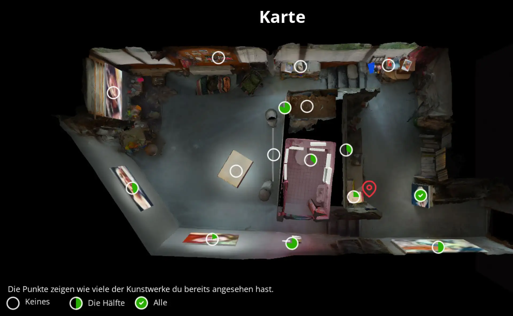
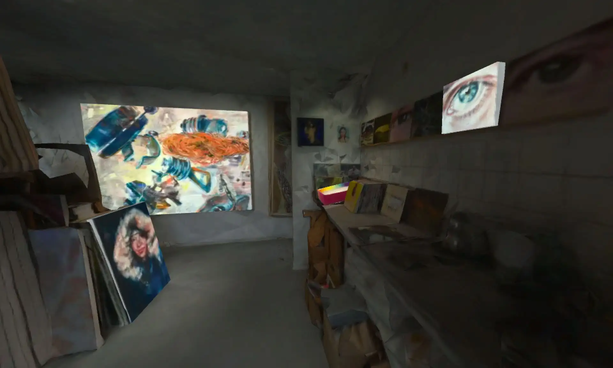
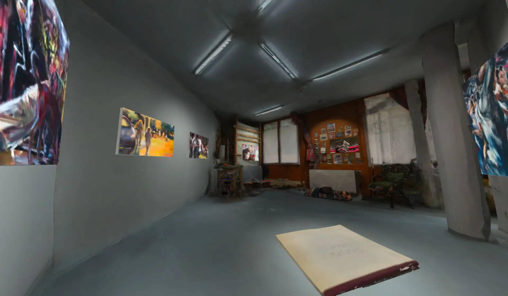
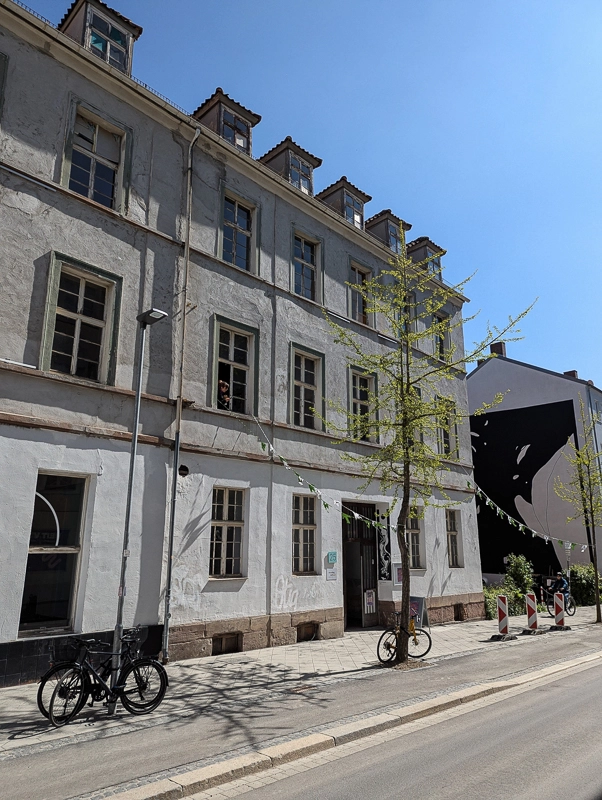
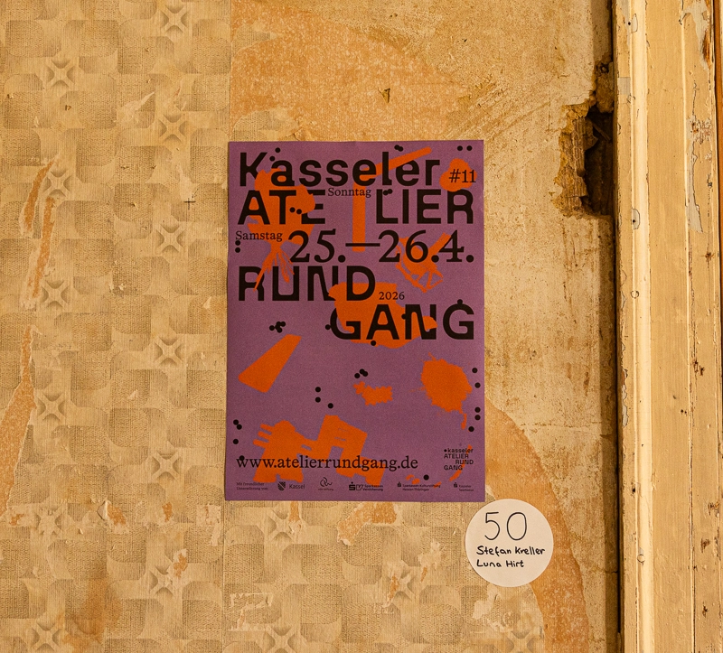
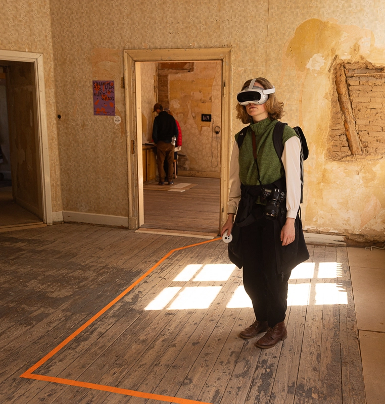
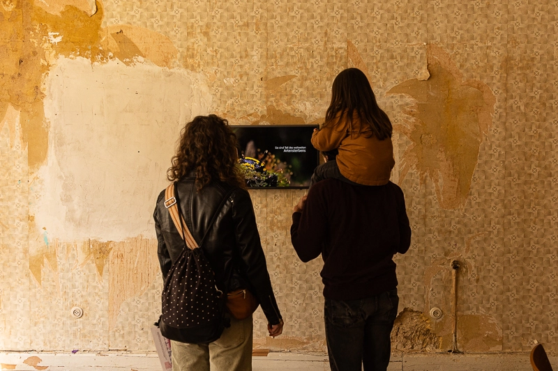
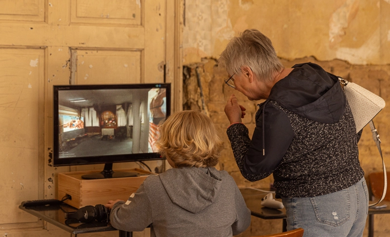
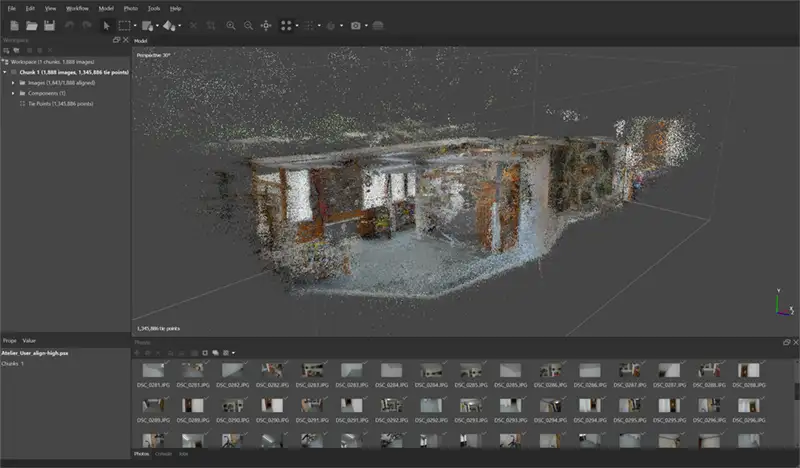
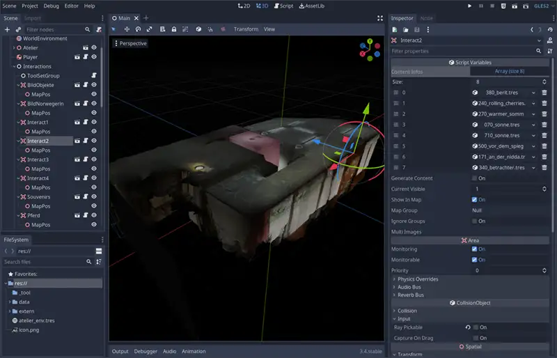

Das Virtuelle Atelier ist ein digitales Abbild des realen Ateliers von Mirta Domacinovic in Frankfurt am Main. Mit Hilfe einer aus Spielen bekannten Steuerung kann sich der Besucher virtuell durch die Räumlichkeiten bewegen und dabei Abbildungen real existierender Werke maßstabsgetreu im Verhältnis zum Raum erleben und ihre Wirkung im Raum erfahren.
Von einer Freiluft-Malaktion bis hin zur Entstehung eines Bildes in Zeitraffer, bietet das Virtuelle Atelier die Möglichkeit, einen Blick hinter die Kulissen zu werfen und so tiefer in die Geschichte und Entstehung einzelner Werke einzutauchen.
Jetzt Erkunden


2026
Im Rahmen des Kasseler Atelierrundgangs 2026 konnten wir eine aktualisierte Version in VR ausstellen.





Technische Umsetzung
Das Virtuelle Atelier wurde mit der Open Source Godot Game Engine umgesetzt. Die Grundlage ist ein mithilfe von Photogrammetrie erstelltes 3D Modell des realen Ateliers in Frankfurt.

